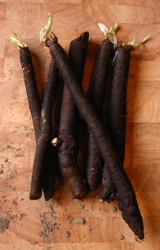

In België bestaat er één wilde soort van schorseneren, namelijk de kleine schorseneer (Scorzonera humilis). Deze soort is zeer zeldzaam en kan dus beter niet geplukt worden. De schorseneer die bij ons wordt gegeten is een soort die bij hier geteeld wordt maar eigenlijk afkomstig is uit Spanje. Het is een plant uit de composietenfamilie (Asteraceae) waartoe ook de paardenbloem behoort. Enkel de wortel van de plant wordt gebruikt.
Schorseneer of haverwortel? Het gaat hier wel degelijk om twee verschillende plantensoorten. Toch zijn de meeste haverwortels op de markt eigenlijk schorseneren. Dit is op zich geen probleem omdat beide wortels op dezelfde manier worden bereid en een gelijkaardige smaak hebben.
Als u schorseneren koopt, let er dan op dat de wortels stevig en zo dun mogelijk zijn. Verse schorseneren kunnen 4 à 5 dagen worden bewaard in de koelkast.
Schorseneren kunnen op verschillende manieren worden bereid en ze kunnen zelfs rauw worden gegeten. De wortels moeten worden gepeld en onmiddellijk in water met azijn of citroensap worden gelegd. Schorseneren oxideren namelijk heel snel en vertonen dan een bruinachtige en onsmakelijke kleur. Daarom worden schorseneren immers meestal gekookt.
De gepelde schorseneren worden vervolgens gekookt of gestoomd. Hou wel de kook- of de stoomtijd in het oog. De wortel moet nog een beetje krokant blijven. Zo voorkomt men dat de schorseneren dezelfde bloemige textuur krijgen als de schorseneren uit blik waar kinderen slechte herinneringen aan overhouden.
Schorseneren kunnen dus op verschillende manieren worden bereid, maar smaken toch het beste met boter en citroen. Hierbij moeten we toegeven dat dit niet de lichtste bereidingswijze is...